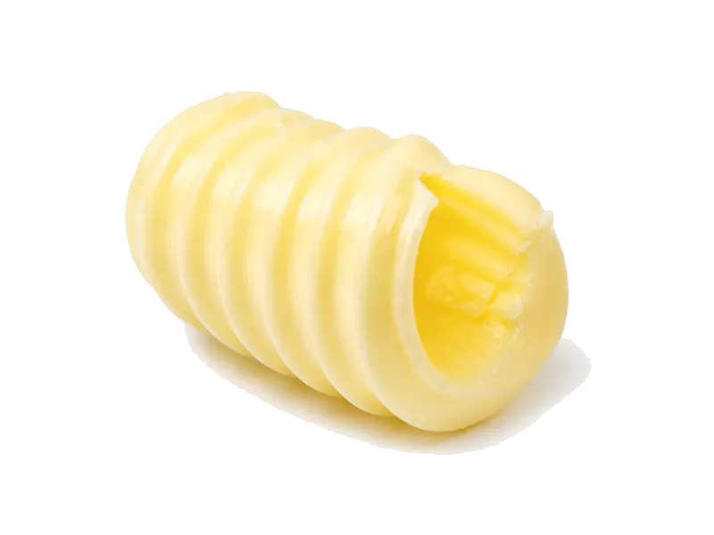

Tłuszcze i oleje
Masło ekstra 82%
Masło ekstra 82%: 0.7 g białka, 748 kcal, 0.7 g węglowodanów i 82 g tłuszczu na 100 g. Kategoria: Tłuszcze i oleje.
Kalorie748 kcalna 100 g
Białko / proteiny0.7 g
Węglowodany0.7 g
Tłuszcz82 g
Cena (szac.)~5,00 złza 100 g
Ceny zaktualizowano: maj 2026 (szacunek — ceny w popularnych supermarketach)
Porcja: łyżka (10g)
| Kalorie | 75 kcal |
|---|---|
| Białko | 0.1 g |
| Węglowodany | 0.1 g |
| Tłuszcz | 8.2 g |
| Cena (szac.) | ~0,50 zł |
Szczegółowe składniki odżywcze na 100 g
| Wartość energetyczna (kalorie) | 748 kcal |
|---|---|
| Białko (proteiny) | 0.7 g |
| Węglowodany | 0.7 g |
| Tłuszcz | 82 g |
| Tłuszcze nasycone | 51 g |
| Tłuszcze nienasycone | 31 g |
| Witaminy i minerały | Witamina A, D, Witamina E |
| Współczynnik kcal / 1 g białka | 1068.6 |
| Cena produktu (szac. za 100 g) | ~5,00 zł |
| Cena za 100 g białka (szac.) | ~714,29 zł |